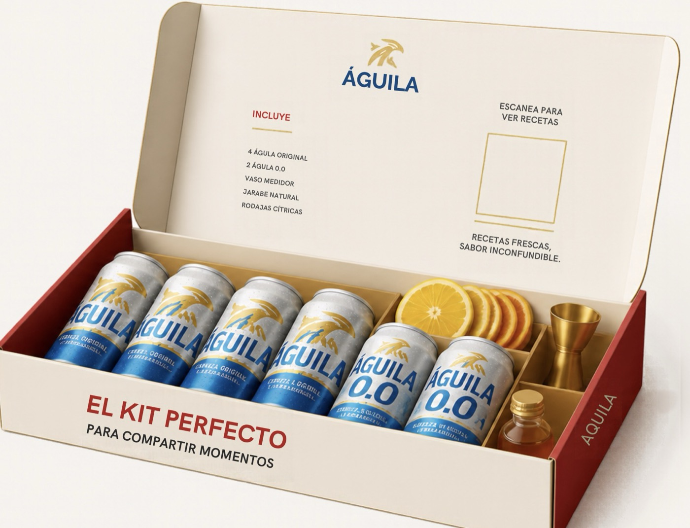

ÁGUILA
Bavaria
Plan Presente · El kit del parche
¿Cuál es
tu receta?
7 preguntas sobre lo que te gusta. Te decimos qué preparar con tu kit.

Nos vemos
más adelante
Este kit es para mayores de 18 años.
Todas las
recetas
Cada una se puede hacer con Águila o con Águila 0.0.
Tu receta
Ingredientes · 1 vaso
El vaso medidor del kit tiene dos lados: la medida grande es de 30 ml y la pequeña de 15 ml.
Cómo se hace
¿Comprarías este kit para tu próximo plan?
Gracias. Tu respuesta nos ayuda a validar el kit.
Las otras recetas del kit
Elige
tu kit
Los dos traen el mixer, el vaso medidor y las recetas.
Pedido de muestra: no se cobra nada. En el piloto, el kit se pide por TaDa, la app de domicilios de Bavaria.
¡Listo
el plan!
Y después del plan
Si tomaste, no manejes. Vuelve a casa en transporte o con alguien que no haya tomado.